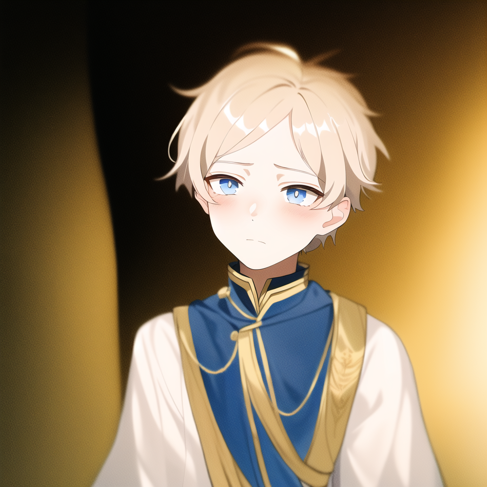
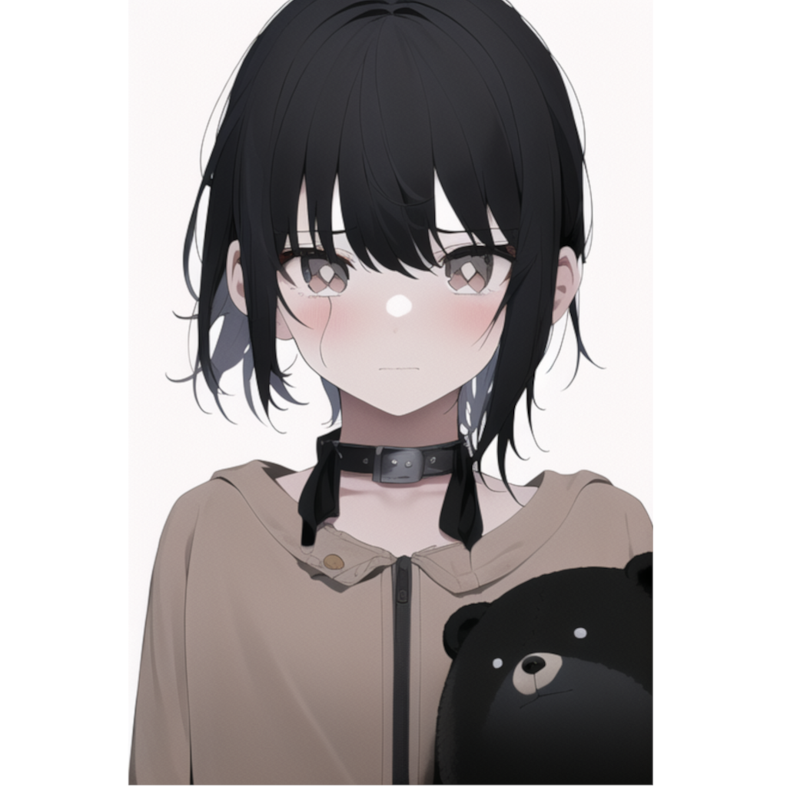
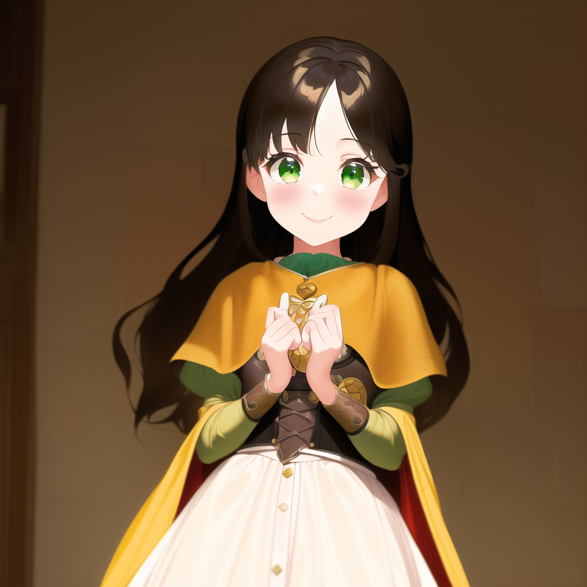
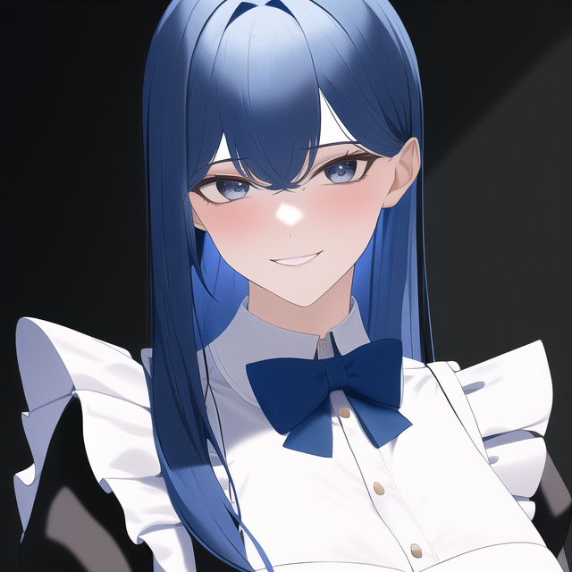

Personagens
Nesta seção, você terá acesso a uma breve descrição de todos os personagens já criados no RPG 恋と悲劇 (koi to higeki). Este guia foi elaborado para auxiliá-lo a identificar os personagens ao longo da história. Embora não estejam organizados em ordem alfabética, tenho planos de implementar um sistema de busca no site no futuro. Espero sinceramente que este recurso seja valioso para você!
Yuki
Nascido e criado em Fittoa, Yuki Leonard é o príncipe e herdeiro futuro do trono. Desde tenra idade, ele foi criado dentro dos muros do castelo, mantendo-se afastado do mundo exterior. Yuki dedicava a maior parte de seu tempo à biblioteca do palácio, buscando conhecimento através da leitura. No entanto, sua vida tomou um novo rumo com a chegada de Sue, sua nova assistente doméstica.
Sue
Sem conhecimento de suas origens, Sue reside nas favelas de Fittoa, buscando o necessário para sobreviver através de atividades de saque. Órfã desde tenra idade, ela foi forçada a assumir responsabilidades de adulto em uma idade muito jovem. Contudo, sua realidade sofre uma reviravolta inesperada quando, de maneira surpreendente, ela consegue um emprego no castelo de Fittoa.
Luna
Luna nasceu e cresceu em Zatto, sendo criada em meio à nobreza. Sua família detinha considerável influência no castelo, até que um novo rei assumiu o controle de Zatto. Desde jovem, Luna enfrentou grandes desafios na comunicação, mas encontrou uma maneira de superar esse obstáculo por meio da linguagem de sinais.
Daniela
Empregada e cuidadora de Yuki, Daniela é a pessoa que carrega a maior responsabilidade entre todos os empregados do castelo de Fittoa.